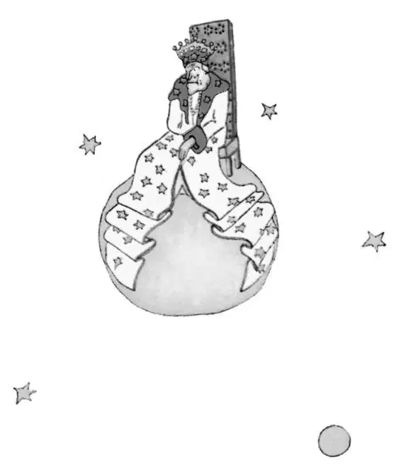

CHAPTER 10
第十章
—the little prince visits the king
——小王子拜见国王
He found himself in the neighborhood of the asteroids 325, 326, 327, 328, 329, and 330. He began, therefore, by visiting them, in order to add to his knowledge.
他发现自己在小行星325、326、327、328、329和330附近。因此，他开始访问这些星球，以增长见识。
The first of them was inhabited by a king. Clad in royal purple and ermine, he was seated upon a throne which was at the same time both simple and majestic.
其中，第一个星球上住着一位国王。他身着皇家紫袍和貂皮大衣，坐在简单却庄严的宝座上。
"Ah! Here is a subject," exclaimed the king, when he saw the little prince coming.
“啊！一个臣民来了。”看到小王子来了，国王高声喊道。
And the little prince asked himself:
小王子自问道：
"How could he recognize me when he had never seen me before?"
“他以前从未见过我，怎么能认出我来呢？”
He did not know how the world is simplified for kings. To them, all men are subjects.
他不明白国王们是怎么简化这个世界的。对他们来说，所有人都是臣民。
"Approach, so that I may see you better," said the king, who felt consumingly proud of being at last a king over somebody.
“走近点，让我好好地看看你。”国王说道。他觉得特别骄傲，终于成为一个可以凌驾于他人之上的国王了。

The little prince looked everywhere to find a place to sit down; but the entire planet was crammed and obstructed by the king's magnificent ermine robe. So he remained standing upright, and, since he was tired, he yawned.
小王子环顾四周，想找一个地方坐下来，但是整个星球都塞满了国王华丽的貂皮大衣。于是，他只好直挺挺地站着。因为他太累了，就打了个哈欠。
"It is contrary to etiquette to yawn in the presence of a king," the monarch said to him. "I forbid you to do so."
“在国王面前打哈欠是不合规矩的。”国王对他说道，“我禁止你这样做。”
"I can't help it. I can't stop myself," replied the little prince, thoroughly embarrassed. "I have come on a long journey, and I have had no sleep..."
“可我情不自禁啊。我自己没法控制。”小王子回答说，感到特别窘迫。“我走了很远的路才来到这里，我都没有睡觉……”
"Ah, then," the king said. "I order you to yawn. It is years since I have seen anyone yawning. Yawns, to me, are objects of curiosity. Come, now! Yawn again! It is an order."
“呃，那么，”国王说，“我命令你打哈欠。我很多年没有看人打哈欠了。哈欠对我来说是令人好奇的东西。开始吧，就现在！再打一个哈欠！这是命令。”
"That frightens me... I cannot, any more..." murmured the little prince, now completely abashed.
“吓到我了……我再打不出来了……”小王子咕哝着，完全不知所措。
"Hum! Hum!" replied the king. "Then I—I order you sometimes to yawn and sometimes to—”
“嗯！嗯！”国王回答到。“那么我——我命令你有时可以打哈欠，有时可以——”
He sputtered a little, and seemed vexed.
他有点语无伦次，似乎很生气。
For what the king fundamentally insisted upon was that his authority should be respected. He tolerated no disobedience. He was an absolute monarch. But, because he was a very good man, he made his orders reasonable.
因为国王最坚持的是他的权威必须受到尊重。他不能容忍任何人违抗他的旨意。他是拥有绝对权力的君王。然而，因为他是非常善良的一个人，他的命令都是合理的。
"If I ordered a general," he would say, by way of example, "if I ordered a general to change himself into a sea bird, and if the general did not obey me, that would not be the fault of the general. It would be my fault."
“如果我命令一个将军，”他常常举例子说，“如果我命令一个将军把他自己变成一只海鸟，而将军没有服从的话，那不会是将军的错。那是我的过错。”
"May I sit down?" came now a timid inquiry from the little prince.
“我可以坐下吗？”小王子怯怯地问。
"I order you to do so," the king answered him, and majestically gathered in a fold of his ermine mantle.
“我命令你坐下。”国王回答他，并庄严地把他拖在地上的大衣衣襟收了收。
But the little prince was wondering... The planet was tiny. Over what could this king really rule?
小王子却在想，这个星球很小。那国王到底统治谁呢？
"Sire," he said to him, "I beg that you will excuse my asking you a question—”
“陛下，”他向国王说，“我请求您能让我问您一个问题——”
"I order you to ask me a question," the king hastened to assure him.
“我命令你问我一个问题，”国王急忙肯定地回答他。
"Sire—over what do you rule?”
“陛下，您统治什么呢？”
"Over everything," said the king, with magnificent simplicity.
“统治一切。”国王极其简单地回答道。
"Over everything?"
“统治一切？”
The king made a gesture, which took in his planet, the other planets, and all the stars.
国王打了个手势，把他的星球，别的星球以及所有的星星都囊括在内。
"Over all that?" asked the little prince.
“那些都在你的统治之下？”小王子问。
"Over all that," the king answered.
“那些都由我来统治。”国王回答说。
For his rule was not only absolute: it was also universal.
因为他的统治不仅是绝对的，而且还遍布整个宇宙。
"And the stars obey you?"
“星星也听你的？”
"Certainly they do," the king said. "They obey instantly. I do not permit insubordination."
“它们当然要听我的。”国王说。“它们随时听我的命令。我不允许有任何反抗。”
Such power was a thing for the little prince to marvel at. If he had been master of such complete authority, he would have been able to watch the sunset, not forty-four times in one day, but seventy-two, or even a hundred, or even two hundred times, with out ever having to move his chair. And because he felt a bit sad as he remembered his little planet which he had forsaken, he plucked up his courage to ask the king a favor:
这样的权力让小王子惊叹不已。如果他掌握了这种绝对的权威，他一天就不止看到44次日落，而是72次，一百次，甚至两百次日落，连椅子都不需要挪一下。想起他离弃的那个小星球，他感到一丝悲伤，于是斗胆请国王帮他一个忙。
"I should like to see a sunset... do me that kindness... Order the sun to set..."
“我想看看日落……帮帮我吧……命令太阳下山吧……”
"If I ordered a general to fly from one flower to another like a butterfly, or to write a tragic drama, or to change himself into a sea bird, and if the general did not carry out the order that he had received, which one of us would be in the wrong?" the king demanded. "The general, or myself?"
“如果我命令一个将军像一只蝴蝶那样，从一朵花飞到另一朵上，或是命令他写一部悲剧，或是变成一只海鸟，而将军没有执行他所接到的命令，我们两个谁该受到责备？”国王问他。“是将军，还是我呢？”
"You," said the little prince firmly.
“是您。”小王子肯定地说。
"Exactly. One much require from each one the duty which each one can perform," the king went on. "Accepted authority rests first of all on reason. If you ordered your people to go and throw themselves into the sea, they would rise up in revolution. I have the right to require obedience because my orders are reasonable."
“完全正确。要一个人履行的责任必须是在他的能力范围之内。”国王继续说道。“被接受的权威首先要建立在理智之上。如果你命令你的人民去投海，他们就会奋起反抗。我有权要求人们服从我，因为我的命令是理智的。”
"Then my sunset?" the little prince reminded him: for he never forgot a question once he had asked it.
“那么我的日落呢？”小王子提醒他。只要是他提过的问题，他就绝不会忘记。
"You shall have your sunset. I shall command it. But, according to my science of government, I shall wait until conditions are favorable."
“你会看到你的日落的。我会命令太阳落山的。不过，根据我的统治科学，我必须等到条件成熟的时候。”
"When will that be?" inquired the little prince.
“那是什么时候呢？”小王子问。
"Hum! Hum!" replied the king; and before saying anything else he consulted a bulky almanac. "Hum! Hum! That will be about—about—that will be this evening about twenty minutes to eight. And you will see how well I am obeyed.”
“嗯！嗯！”国王回答。他别的什么都没有说，只顾翻阅一本很厚的日历。“嗯！嗯！那大概是——大概——那大概是今晚７点40分。你会看到我的命令是怎么被服从的。”
The little prince yawned. He was regretting his lost sunset. And then, too, he was already beginning to be a little bored.
小王子打了个哈欠。他很遗憾自己看不到日落。于是，他开始有点烦闷。
"I have nothing more to do here," he said to the king. "So I shall set out on my way again."
“在这里我没有什么其他事情可做，”他对国王说道，“所以我要继续上路了。”
"Do not go," said the king, who was very proud of having a subject. "Do not go. I will make you a Minister!"
“不要走。”这位很骄傲自己有了一个臣民的国王说道，“不要走。我命你为我的大臣！”
"Minister of what?"
“什么大臣呢？”
"Minster of—of Justice!”
“呃……司法大臣！”
"But there is nobody here to judge!"
“可这里没有人要审判啊！”
"We do not know that," the king said to him. "I have not yet made a complete tour of my kingdom. I am very old. There is no room here for a carriage. And it tires me to walk."
“我们还不知道到底有没有人呢。”国王对他说，“我还没有巡视完我的王国呢。我已经很老了。这里放不下一辆马车。走路会很累人。”
"Oh, but I have looked already!" said the little prince, turning around to give one more glance to the other side of the planet. On that side, as on this, there was nobody at all...
“哦，可我已经都转完了！”小王子边说边转过身看了看星球的另一侧。那边和这边一样，一个人都没有。
"Then you shall judge yourself," the king answered. "that is the most difficult thing of all. It is much more difficult to judge oneself than to judge others. If you succeed in judging yourself rightly, then you are indeed a man of true wisdom."
“那你就审判你自己吧。”国王回答道。“那可是世上最难的事情了。审判自己比审判别人要难得多。如果你能正确地审判自己，那么你就确确实实是一个拥有真正智慧的人。”
"Yes," said the little prince, "but I can judge myself anywhere. I do not need to live on this planet."
“是的，”小王子说，“可不论身在何处，我都可以审判自己。我没必要非呆在这个星球不可。”
"Hum! Hum!" said the king. "I have good reason to believe that somewhere on my planet there is an old rat. I hear him at night. You can judge this old rat. From time to time you will condemn him to death. Thus his life will depend on your justice. But you will pardon him on each occasion; for he must be treated thriftily. He is the only one we have."
“嗯！嗯！”国王说。“我有充分的理由认为，我的星球的某个地方有一只上了年纪的老鼠。我晚上听到他的叫声。你可以审判这只老耗子。你也可以经常判他死刑。因此，他的生命取决于你的审判。不过任何情况下你都得赦免他，因为我们一定得好好地对待他。我们就只有他这一只耗子。”
"I," replied the little prince, "do not like to condemn anyone to death. And now I think I will go on my way."
“我啊，”小王子回答说，“不喜欢给任何人判死刑。而现在，我想我要上路了。”
"No," said the king.
“不行。”国王说道。
But the little prince, having now completed his preparations for departure, had no wish to grieve the old monarch.
小王子现在已经准备好要离开了，可是他又不愿让老君主伤心。
"If Your Majesty wishes to be promptly obeyed," he said, "he should be able to give me a reasonable order. He should be able, for example, to order me to be gone by the end of one minute. It seems to me that conditions are favorable..."
“如果陛下想让人立马服从您，”他说，“您就应该给我下一个合理的命令。比如，陛下可以命令我一分钟之内就消失。我想这个命令似乎具备了条件……”
As the king made no answer, the little prince hesitated a moment. Then, with a sigh, he took his leave.
因为国王没有回答，小王子犹豫了片刻。然后，他叹了一口气，准备离开。
"I made you my Ambassador," the king called out, hastily.
“我任命你为我的大使。”国王急忙喊道。
He had a magnificent air of authority.
他一副威风凛凛的样子。
"The grown-ups are very strange," the little prince said to himself, as he continued on his journey.
“大人们真是奇怪。”小王子一边继续赶路一边咕哝着。